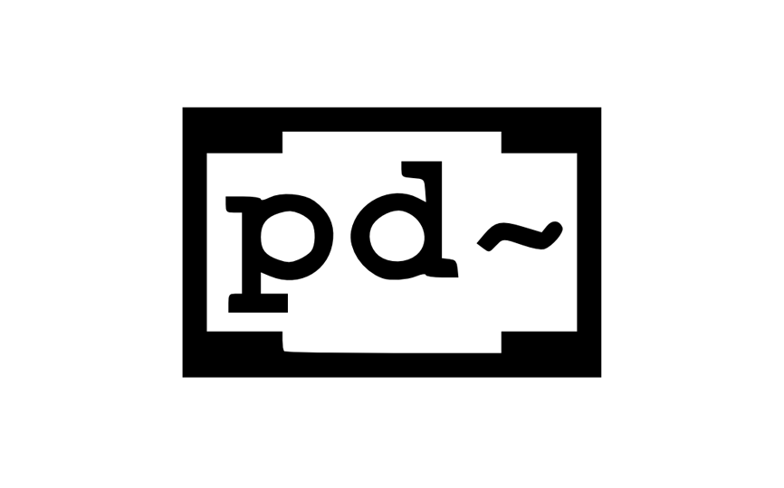

- 


My name is Lillie and this is my online portfolio. I am current in my third and final year of university. I am studying a Ba(Hons) in Sound for Games and Apps at dBs Bristol HE Centre. I have had a recent placement during my second year working at Enzien Audio, based in London working closely with them on their software heavy, helping with basic how-to videos along with making basic to complicated Pure Data patches to place in different example unity games using their online software.
What I study at uni gives me a wide knowledge base of up to date audio software using in the process of designing games and applications. My main interests are, audio programming inside of different game engines like Unreal Engine and Unity; using programs like Wwise and FMOD to integrate audio into game engines; to designing sounds on DAW’s including Logic Pro and Pro Tools and to creating audio using Max MSP and Pure Data, which are visual programming languages used to create media.
Please check out my main portfolio, it is divided by project and it will either be a download of my work or else a dedicated page portraying it.